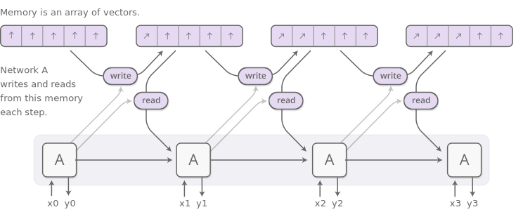

11 Reinforcement Learning
Advanced Machine Learning
Malte Schilling, Neuroinformatics Group, Bielefeld University
Recap - Neural Turing Machine
Neural Turing Machines are Neural Networks that are capable of coupling to external memories.
A NTM is differentiable which turns it into a neural computer (read-write access to external memory).
We see the capability of using external memories through the application of copy, repeat copy, associative recall …

Limitations of Neural Turing Machines
- But NTM were only able to retrieve memories in order of their index, not in order in which they were written.
- Preserving this temporal order is necessary for many complex/cognitive tasks, e.g. sequence of instructions.
Differentiable Neural Computers
Differentiable Neural Computers
- are a successor to Neural Turing Machines.
- A controller learns to use an internal memory through multiple read and write heads.
- As one addition, a linkage matrix stores information about the order of writes.
- Differentiable end-to-end.
Selective Attention to Memory
The controller outputs are used to parameterise a distribution (over the locations (rows) in a memory matrix.
Weightings are defined by three main attention mechanisms:
- content allocation,
- memory allocation,
- and temporal order
The controller interpolates among these mechanisms using scalar gates.
Memory Access: Searching by Content
The controller emitts a key vector \(\vec{k}\) which is compared to the content of each memory location \(M[i]\) using a similarity measure \(S(.,.)\) (e.g. cosine distance).
\[
\vec{w}[i] = \frac{exp(\beta S(\vec{k}, M[i]) )}{\sum_j exp(\beta S(\vec{k}, M[j]) )}
\]
Afterwards, all these values are normalised with a softmax.
This mechanism finds the memories that are ‘closest’ to the key.
Memory Access: Searching by Time
NTM was only able to retrieve memories in order of their index but not in order in which they were written.
As temporal order is necessary for many tasks (e.g. sequence of instructions), DNC was extended through keeping track of sequences.
This is realized through a precedence weighting which remembers which locations were most recently written to. And from this a temporal link matrix is defined.
The controller can use this list to retrieve items depending on temporal order (forward and backward).
Allocating Memory
NTM could only ‘allocate’ memory in contiguous blocks. This lead to memory management problems.
The Differentiable Neural Computer keeps a differentiable list that tracks the usage of all the memory locations.
This usage list is automatically updated after each write and freeing operation.
Task: bAbI
John is in the playground. John picked up the football.
Where is the football? playground
Daniel went to the hallway. Sandra moved to the garden.
Where is Daniel? hallway
John moved to the office. Sandra journeyed to the bathroom.
Where is Daniel? hallway
Mary moved to the hallway. Daniel travelled to the office.
Where is Daniel? office
Input is encoded using one-hot encoding (example task in (Weston et al. 2016) is a vocabulary of 40 and 4000 sample sequences).
Word Embeddings
ML algorithms require a form of vector representation as an input instead of strings/words.
One-hot-encoding
- each word gets its own dimension
- works well for very limited corpora, but doesn’t scale well
Distributed Representation
- each dimension represents a certain property
- learn a distributed representation
- distance between words reflects a form of semantic similarity
Can be realized through learning context/cooccurence of words. This is based on the distributional hypothesis: words that are similar in meaning occur in similar contexts.
word2vec
Common approach that learns high dimensional embedding to representat words.
Instead of capturing the cooccurrence of words directly, it is trained as a predictor of surrounding words.
Goal is to maximize the log probability of any context word when a current center word is given as input (done for a specific window length = how large is the context?).
Example: word2vec

Example: Analogies in word2vec

- Scales nicely with corpus size.
- Captures complex patterns that go beyond word similarity.
General Task Structure: Graphs
DNC performed very good on the simple language task (and a more extended version of the bAbI task).
Importantly, there is an underlying structure of the used facts in this task:
- there is an actor,
- an action
- and a set of arguments.
This can be expressed as well as a simple graph. Graph structure is (as we know) a general way of representation and can be applied for many domains: maps, parse-trees, knowledge graphs, …
As a next step, the DNC was trained on more complex structures to analyze how this generalizes to complex graph structures.
Task: Family Tree
Inference question: (Freya, _, MaternalGreatUncle)
Answer: (Freya, Fergus, MaternalGreatUncle)
Training input
(Charlotte, Alan, Father) (Simon, Steve, Father) (Steve , Simon, Son1) (Nina, Alison, Mother) (Lindsey, Fergus, Son1) (Bob, Jane, Mother) (Natalie, Alice, Mother) (Mary, Ian, Father) (Jane, Alice, Daughter1) (Mat, Charlotte, Mother)
54 edges in total
Example: Traversing Graph
Task: Finding Subway Connection
Access to Memory in Subway Task
Summary Differentiable Neural Computer
- Combines the advantages of neural and computational processing by providing a neural network with read–write access to an external memory.
- Access to memory is narrowly focused using attention which minimizes interference.
- The whole system is differentiable, and can therefore be trained end-to-end with gradient descent.
This allows the network to learn how to operate and organize the memory in a goal-directed manner.
Summary
Modularisation is a useful concept in Computer Science. It can as well be applied to learning of these systems.
- AdaBoost uses error-weighted learning and combines the created weak classifiers into a “strong” classifier with proven convergence.
- Adversarial Learning pits two networks, a generator and a discriminator, against each other to imitate patterns from a given domain.
- The “Differentiable Neural Computer” combines a recurrent network – acting in the role of a “differentiable CPU” – with external memory in a format that allows to synthesize complex sequential tasks through gradient-based optimization.
Reinforcement Learning
Reading for (Deep) Reinforcement Learning:
Forms of Learning
What is special in Reinforcement Learning?
- There is no supervisor, only a reward signal.
- Feedback can be delayed, not instantaneous.
- Sequential: Time really matters (non i.i.d data).
- Agent’s actions affect the subsequent data it receives
What is Reinforcement Learning (RL)?
Goal of RL
Actively learn a good strategy for an agent from interaction with the environment.
Reinforcement Learning
Reinforcement learning is learning what to do—how to map situations to actions—so as to maximize a numerical reward signal. The learner is not told which actions to take, but instead must discover which actions yield the most reward by trying them (Sutton and Barto 2018).
Example: Solving a Rubik’s Cube with a Robot Hand
Application of Deep Reinforcement Learning (and many advanced tricks) to learn how to solve a Rubik’s Cube with a robotic hand.
One important ingredient: training in simulation – but allow for enough variation to enforce adaptivity (automatic domain randomization).
Applying different Perturbations
Remarks on State-of-the-Art for DRL in Robotics
Caveats
- in testing: robot dropped cube 8 out of 10 trials
- it required 10.000 years of simulated training
- dexterity is very specific to cube
- can adapt to very specific disturbances
None-the-less, this is a remarkable demonstration, but shows how much has to be done to reach human-like capabilities.
References
Franke, Jörg, Jan Niehues, and Alex Waibel. 2018. “Robust and Scalable Differentiable Neural Computer for Question Answering.” CoRR abs/1807.02658. http://arxiv.org/abs/1807.02658.
Graves, Alex, Greg Wayne, and Ivo Danihelka. 2014. “Neural Turing Machines.” CoRR abs/1410.5401.
Graves, Alex, Greg Wayne, Malcolm Reynolds, Tim Harley, Ivo Danihelka, Agnieszka Grabska-Barwińska, Sergio Gómez Colmenarejo, et al. 2016. “Hybrid Computing Using a Neural Network with Dynamic External Memory.” Nature 538 (7626): 471–76.
OpenAI, Ilge Akkaya, Marcin Andrychowicz, Maciek Chociej, Mateusz Litwin, Bob McGrew, Arthur Petron, et al. 2019. “Solving Rubik’s Cube with a Robot Hand.” http://arxiv.org/abs/1910.07113.
Silver, David. 2015. “UCL Course on Rl Ucl Course on Rl Ucl Course on Reinforcement Learning.” http://www0.cs.ucl.ac.uk/staff/d.silver/web/Teaching.html.
Sutton, Richard S., and Andrew G. Barto. 2018. Reinforcement Learning: An Introduction. Second. The MIT Press.
Weston, Jason, Antoine Bordes, Sumit Chopra, and Tomas Mikolov. 2016. “Towards Ai-Complete Question Answering: A Set of Prerequisite Toy Tasks.” In 4th International Conference on Learning Representations, ICLR 2016, San Juan, Puerto Rico, May 2-4, 2016, Conference Track Proceedings. http://arxiv.org/abs/1502.05698.